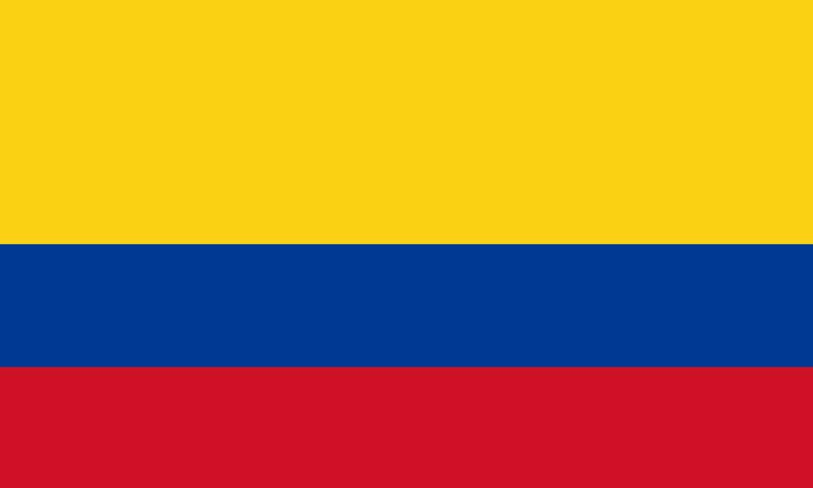

Facts
Here are some interesting facts about the featured Countries!

Pakistan
- Pakistan is officially called the Islamic Republic of Pakistan.
- The name Pakistan, Pak (pure) and stan (land) means ‘land of the pure’ in the Persian and Urdu languages.
- Pakistan became independent from the British Indian Empire in 1947.
- One of the world’s earliest and largest civilizations flourished in the region such as the Indus Valley Civilization
- Home to the second highest mountain K2, third highest Tirich Mir and the three highest mountain ranges in the world
- The official currency of Pakistan is the Pakistani rupee. About 160 PKR = 1 USD.
- The national drink of Pakistan is sugarcane juice, called "roh"
- Sialkot, located in Pakistan, is the world’s largest producer of handsewn footballs
- Pakistan has the world's largest contiguous irrigation system
- World’s second largest salt mines

Colombia
- Colombia is the second most biodiverse country in the world, after only Brazil which is 10 times its size, and one of only 17 “megadiverse” countries. It has the highest amount of species by area in the world, including more species of bird than all of Europe and North America combined.
- Colombia has a vibrant music scene. Two of the best known Colombian musicians are Shakira and Juanes.
- Colombia is the world’s leading source of emeralds. It is also the third largest exporter of coffee in the world after Brazil and Vietnam.
- Colombia is the only country in South America that has coastlines on the Caribbean Sea and the Pacific Ocean. There are more than 300 beaches that locals and tourists can take advantage of.
- The land’s surface is equivalent to the sum of France, Spain, and Portugal or to the sum of 27 x Netherlands. It is the 25th largest country on earth.

El Salvador
- El Salvador is the smallest country in Central America and is smaller than the state of Massachusetts.
- About 90 percent of Salvadorans are mestizo, descendants of Spanish and Indian ancestors.
- The El Salvador weather is tropical. The rainy season is from May to October and the dry season is from November to April.
- It is known as the “Land of Volcanoes” because there are more than twenty volcanoes in the region. Two of which are active.
- It’s the only country in Central America without a Caribbean coastline.
- Coffee cultivated in the western part of the country is famous all over the world.
- The largest earthquake in the country happened on January 13, 2001. It had a magnitude of 7.7 on the Richter Scale and caused a tsunami.
- El Salvador has five archaeological parks: Cihuatan, Joya de Ceren, San Andres, Casa Blanca and Tazumal.
- With a population of almost 7 million people, El Salvador is the most densely populated country in the Americas.

Nigeria
- Nigeria is the seventh-most populous country in the world, home to more than 200 million people. While that may be a lot of people, population numbers would likely be even higher if it weren't for the country's high mortality rates and low life expectancy.
- While there are a number of different religions practiced in Nigeria, the majority of the population is either Christian or Muslim.
- The town of Igbo-Ora is known as the nation's home of twins. Many of the local Yoruba people believe their consumption of yams and okra leaves to be the cause of their high birth rate of twins. While some fertility experts believe that certain yams contain a natural hormone that could cause multiple ovulation, there is no scientific evidence of this phenomenon.
- Nigeria is a diverse multiethnic country with more than 520 spoken languages. While English is the official language, Hausa, Yoruba and Igbo are also major languages in the country.
- Lagos, the former capital of Nigeria before being moved to Abuja, is the country's largest and most populous city and has been dubbed "Africa's Big Apple," in reference to New York City.
- The country's film industry, known as Nollywood, is one of the largest film producers in the world, second only to India's Bollywood
- Nigeria is home to Aliko Dangote, the richest man in Africa. Dangote's business interests in agriculture, banking, cement, manufacturing, salt and sugar have earned his net worth of more than $12 billion.
- Largely due to its export market, Nigeria is the largest economy in Africa. While the agricultural industry accounts for approximately 70 percent of the country's employment, petroleum products are the primary export—accounting for more than 90 percent of Nigeria's exports.
- Like in other African countries, some Nigerians consider the left hand to be unclean and using it to be a sign of disrespect. Those that believe this do not eat, shake hands or receive items with their left hand.
- Despite gaining their independence in 1960, Nigeria has remained a member of the British Commonwealth, an association of 53 sovereign states. The country is also a member of the African Union.

Jamaica
- Green yellow and black are the colors of the national flag.
- Marcus Garvey is the Jamaican political leader who led the pan african movement.
- Bob Marley is the Jamaican artist who popularized reggae
- Usain Bolt is the Jamaican athlete who is the fastest man in the world
- 2 people are on the Jamaican Coat of Arms
- "Out of many on people" is the quote on the Jamaican Coat of Arms
- Jamaica was colonized by Great Britain
- Kingstong is the capital of Jamaica
- Swallow tail hummingbird is the national bird of Jamaica
- Ackee is the national fruit of Jamaica
Link to top
Link Main Menu